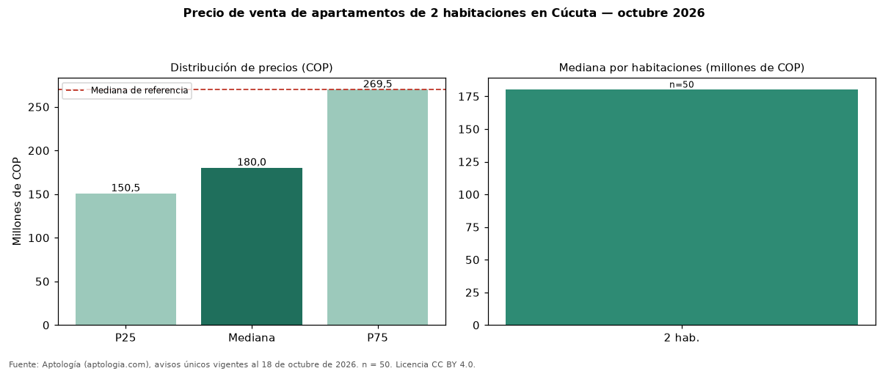

Precio de venta de apartamentos de 2 habitaciones en Cúcuta — octubre 2026
COP 180 millones es la mediana de venta de apartamentos de 2 habitaciones en Cúcuta, según 50 avisos únicos. Eso es 33 % menos que la mediana de apartamentos en Cúcuta (COP 270 millones). Por metro cuadrado, la mediana es COP 2.813.657/m² (−10 % frente a COP 3.125.000/m²), puesto 5 de 5 ciudades comparables. Cruzando con la oferta de arriendo equivalente, la rentabilidad bruta implícita es 8,2 % anual. En el mismo grupo: 3 habitaciones, COP 275 millones; 4 o más habitaciones, COP 362 millones. El área mediana es 60 m² (referencia: 80 m²). El estrato más frecuente es 3. Datos abiertos CC BY 4.0 de Aptología; fuente y búsqueda de inmuebles: https://www.aptologia.com/venta/cucuta. Archivos: PDF de 2 páginas, CSV con las cifras y gráfica PNG.

| Avisos únicos | 50 |
|---|---|
| Percentil 25 | COP 150.500.000 |
| Mediana | COP 180.000.000 |
| Percentil 75 | COP 269.500.000 |
| Mediana por m² | COP 2.813.657 |
Fuente: avisos vigentes de portales inmobiliarios recopilados por Aptología, deduplicados (mínimo 30 avisos únicos por celda). Precios pedidos, no cerrados. Fecha: 2026-10-18.